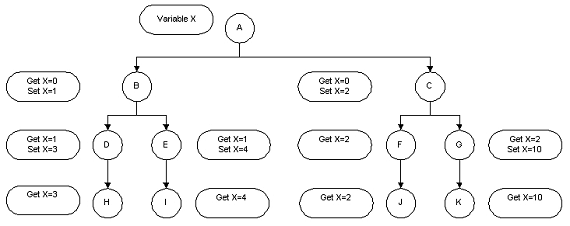

No
The Local Variable stores the values set by the incoming action. The values that are set for such variables are visible only to the subsequent actions.
Example Scenario:
The following image explains the use of a local variable 'X' in a workflow.

The variable is added to the first action 'A'. Action 'A' initially sets the value of the variable 'X' to 0. The action 'B' sets a value 1 to the variable 'X' and 'C' sets a value 2. All the immediate actions after 'B' will get the value 1 from the variable 'X', while the actions after 'C' will get the value 2 from the same variable 'X'. Any changes made by any action to a Local Variable will be visible only to the actions that occur immediately after it.
Example of Local Variable Usage
Add local variable to the Start action only. Prefix the name of the local variables with '@'.
Call the Context.SaveVariables method to persist the state of the variables. A new field is added to the SWExecutionDetails table to persist the local variables.
The local variables are loaded for an action using Context.LoadLocalVariables (executionDetailsId) method.
The local variables can be accessed at run time by the actions through the Variables collection of the Context object.